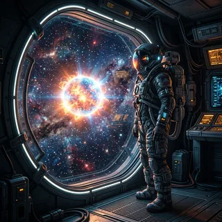
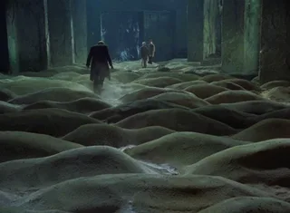

Archives
All posts, ordered by most recent.
Rendering Gargantua: A Real-Time Black Hole in Your Browser
How to render an Interstellar-style black hole in real time: Schwarzschild null geodesics, a Shakura–Sunyaev disk, Doppler beaming in GLSL, and a seamless 4K 120 fps loop.
11 min readLLM Post-Training: A Practitioner's First-Principles Guide
A deep-dive into the modern post-training stack: SFT, DPO, PPO, GRPO, and Knowledge Distillation with mathematical formulation and PyTorch implementations.
8 min readInto Inception, Again, Again and Again
A rewatch review of Inception (2010) by Christopher Nolan.
2 min readSnowpiercer (2013): Movie Review
A movie review of Snowpiercer (2013) by Bong Joon-ho.
3 min readTesting Gemini Omni: Making a Still Bird Fly
A first look at Gemini Omni's image-to-video generation capabilities, evaluating biomechanical motion realism and temporal consistency.
4 min readNo Other Choice (2025): Movie Review
A movie review of No Other Choice (2025) by Park Chan-wook.
3 min read
Project Hail Mary (2026): Movie Review
A movie review of Project Hail Mary (2026) by Phil Lord and Christopher Miller.
3 min readBuilding a Custom Agent Skill: The Semantic Git-Commit Assistant
A hands-on tutorial for building a three-layered local agent skill following progressive disclosure design guidelines to enable clean self-correction loops.
7 min readBuilding a Custom MCP Server: The Port & Process Manager
A hands-on tutorial for building a robust, cross-platform Port and Process Manager MCP server using FastMCP and psutil to reclaim ghost ports.
6 min readPaprika (2006): Movie Review
A movie review of Paprika (2006) by Satoshi Kon.
3 min readFrom Prompts to Playbooks: Distilling Anthropic’s Guide to Agent Skills
A high-density guide to building portable, production-ready AI playbooks: progressive disclosure, YAML routing, validation boundaries, and evaluation suites.
7 min readBeyond Chatbots: Hard-Won Realities from OpenAI's Agent Guide
A high-density distillation of OpenAI's practical guide to agents: core mental models, production-grade tool design, and guardrail realities.
10 min readThe Future of Video: AI, Anime, and the New Cinema
Exploring how AI video generation will revolutionize cinema, drawing parallels to the anime industry's shift to digital.
4 min readThe "Human" Element in a Generative World
Examining what makes photography distinctly human in an age where AI can generate any image imaginable.
4 min readInception (2010): Movie Review
A movie review of Inception (2010) by Christopher Nolan.
3 min readSetup for MCP (Model Context Protocol)
A modern guide to setting up the Model Context Protocol (MCP) for Claude Desktop and Cursor using FastMCP, uvx, and npx.
5 min readThe Thinking Game (2024): Movie Review
A movie review of The Thinking Game (2024) by Greg Kohs.
3 min readThe Unreasonable Realness of Dreams
Pondering how dreams work, how neurons combine memories, and what this means for consciousness and AI.
3 min read
Stalker (1979): Movie Review
A deep dive into Tarkovsky's masterpiece — exploring the philosophical depth, cinematography, and enduring relevance of Stalker.
3 min readPhotos of 2025
A visual journey through the moments in 2025.
📷 0 Photos